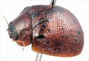
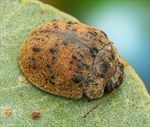
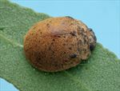
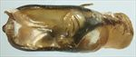
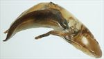
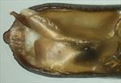
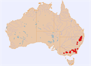

Click on images to enlarge
{kind=link}

Female, Bendemeer, N.E. New South Wales
{kind=link}

Male, Watsons Creek, N.E. New South Wales
{kind=link}

Male, Jenners Ck, Wilsons Downfall, N.E. New South Wales
{kind=link}

Aedeagus, dorsal view (Nimmitabel, S.E. New South Wales)
{kind=link}

Aedeagus, lateral view (Nimmitabel, S.E. New South Wales)
{kind=link}

Aedeagus, dorsal view, showing serrations near apex (Nimmitabel, S.E. New South Wales)
{kind=link}

Distribution
Name
Trachymela punctipennis (Blackburn)
Reference specimen
1999-0351, Tidbinbilla, ACT
Adult Description
Length: ♂ 6.5–8.3 mm (n=78), ♀ 7.0–9.1 mm (n=52).
Colouration:
Morphology:
- Head: punctures quite large (pd ≈ 2× ef) and rather evenly and densely packed. Antennae moderately long (AL: ♂ 39–42% BL, ♀ 35–39% BL), filiform.
- Pronotum: almost evenly curved transversely, rarely slightly explanate, foveal depression behind eye very shallow or almost absent and usually with a small round callus at its centre, puncturation usually clearly impressed, evenly distributed and moderately dense in discal area, becoming much coarser at lateral margins. Front margins join lateral margins in a smoothly rounded right-angle, with lateral margin curving smoothly and gradually towards rear margin.
- Scutellum: nitid or sometimes with a rough surface, unpunctured, rarely with a scattering of very lightly impressed punctures.
- Elytra: surface evenly curved, covered throughout in large, densely and relatively evenly distributed punctures with convex interstices, much smaller punctures may be scattered sparingly on the interstices; small raised verrucae are scattered over the surface and may vary from 1–4 puncture diameters in size with most containing one or more relatively large punctures, surface continuous under humeral callus. Vertical extension of epipleura considerable (HCE/PW = 0.36–0.39).
- Venter: prosternal process almost parallel, lightly closed anteriorly, with a light scatter of short setae throughout, mesoventrite with a few short setae, a single seta usually present on anterior and median trochanter; front edge of metaventrite beveled, truncate.
Male Genitalia (Aedeagus):
- Dimensions: small (LPE = 22–28% BL), quadrate.
- Dorsal view: broadening slightly from near base in a sinuous arc towards apex before the sides converge in a smoothly rounded arc within which the edge is finely serrated, dorsal surface with a short but faint dorso-median channel usually present, tip protruding and smoothly rounded, ostium posterior edge triangular, with apex of triangle in middle and sides formed by dorsal ostial processes.
- Lateral view: ventral surface almost evenly and lightly curved throughout its length, lightly sclerotised dorsal surface projects a considerable distance above the side edges, making it rather thick, tip deflexed.
Immature Stages
Unknown.
Similar species
- Ta167:
- Ta169:
- Ta203: This Victorian species is almost identical in dorsal colouration, texture and arrangement of verrucae. Though little material is available for comparison, it is smaller and the epipleura are wider (the two species likely overlap only slightly in the HCE/BL measure). The aedeagus differs in being proportionally longer and having a constriction (in dorsal view) at about the level of the rear of ostium.
- Ta16: Very similar in general appearance, also being compact, brown and with a scatter of small, black verrucae over its elytral disc. It differs by being slightly smaller in size and having a much denser layer of cuticular wax covering its dorsal surface. It may also be distinguished by the verrucae being more densely packed and having just a single fine puncture each and the much shorter outer antennomeres of the female.
- Ta168: Superficially similar. It differs from Ta02 by a more rugged pronotal surface, verrucae that are more regular in their arrangement, a humeral callus that is not black and the lack of black colouration ventrally.
Notes
- Taxonomy: Identification of Ta02 as Trachymela punctipennis is from examination of specimens in the BMNH (aedeagus of a male, not in type series, in same tray as the type exhibited similar serrations as those found in many specimens of Ta02). Note, however, that Trachymela spilota (Richmond River, NSW) is also very close to Ta02 in appearance, as is Trachymela declivis. It is quite likely that Ta02 is in fact two separate species, with Victorian, Canberra and the western slopes of the Dividing Range constituting one of them (and primarily found on boxes, Adnataria), and the high-altitude locations from southern NSW to the Granite Belt in southern Queensland constituting the other.
- Distribution & Abundance: Ta02 is a relatively abundant species over much of its distributional range. There are differences between the southern and northern populations (see "Morphological Variation" below) that suggest that at least two species are included in this grouping.
- Host Associations: This species seems to occur on a wide diversity of species within Eucalyptus. Most frequently, particularly in the north of its range, it is collected from several species in the ‘Symphyomyrtus : Maidenaria’ subgroup of eucalypts (including E. acaciiformis, E. bridgesiana, E. nova-anglica and E. viminalis). It is also commonly found on E. radiata (Eucalyptus : Aromatica). Two records from stringybarks (Eucalyptus : Capillulus) and a single record each from E. pauciflora (Eucalyptus : Cineraceae) and E. blakelyi (Symphyomyrtus : Exsertaria) are likely to be incidental. In more southerly locations, the species is most often found on box eucalypts, in particular E. melliodora (Symphyomyrtus : Adnataria).
- Morphological Variation: The cuticular wax on this species most often consists of only a light but even sprinkle. Ta02 exhibits a remarkable range in the size of specimens, more so than many other species of Trachymela. Southern specimens are darker in colour than specimens collected north of Tenterfield, this being especially noticeable ventrally, where they are almost completely black. Essentially all specimens from southern Australia (Victoria, around Canberra, Coolah Tops but NOT the highlands around Cooma/Jindabyne and Nimmitabel) have black pigmentation on the inner epipleural surfaces. This is rarely seen in specimens from the northern parts of the distributional range. Southern specimens have a larger number of black verrucae on the elytra, the scutellum is invariably black, and the pronotum of several of these specimens has extensive black areas, also. The aedeagus in southern specimens (Victorian and many collected around Canberra) does not exhibit the serrations along the lateral edges of the spatula that is seen in highland specimens. The shape of the aedeagus is also slightly different, with northern and highland specimens showing a less abrupt narrowing towards the apex. However, they are otherwise similar.
Copyright © 2026. All rights reserved.